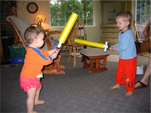

I have two small boys who have recently been watching the BBC version of The Chronicles of Narnia and there’s a lot of sword play so instantly every cooking utensil in the house and stick outside became a sword.
Figuring they would want to really bash on each other I thought it would be fun to make them each a sword with a bit of padding. So, off to the store to get:
- 5’ of 1/2” PVC pipe
- Six end caps
- Two 4-way junctions
- Some PVC/ glue
- Some tennis racket tape
- One of those long foam pool toys (the narrow one, not the fat one. It should have a 1/2” hole in it)
A little cutting, some gluing and voila!

Tip: Cut the foam for the blade about 3-4” longer than the pipe for the blade. This way when they stab you it’s just foam, not PVC pipe and much easier on the belly :)
Total cost was about $15 and I’ve pieces left over for another one (minus the end caps and junction).